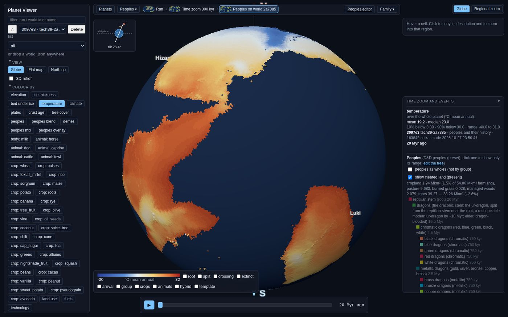
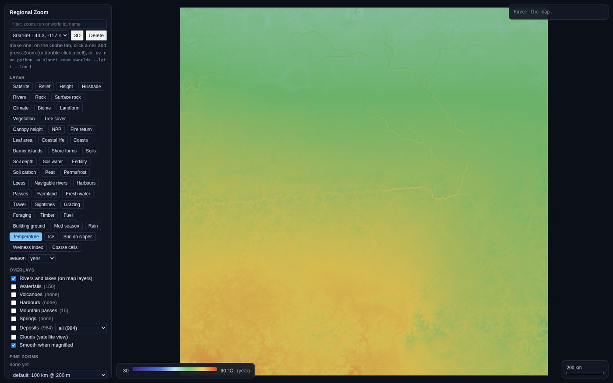
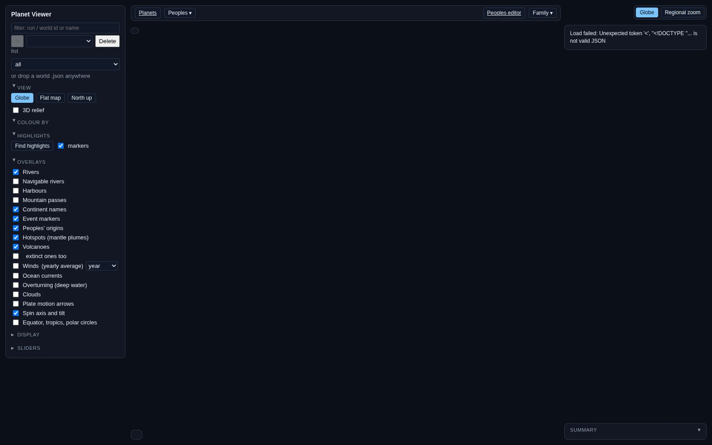
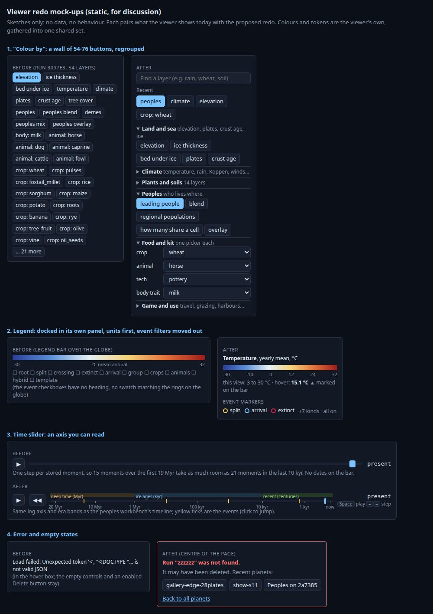

procgen_world · codebase audit · 29 Oct 2026 · main at b36c9581
Codebase Health Check
Short version: the codebase is in good shape for a project that has grown this fast. The physics is careful, nearly every number says where it came from, and there's a strong safety net: 744 tests, plus "golden" checks that catch any accidental change to a simulation. The layers are cleanly separated, and an automatic code checker finds only 26 problems in 55,000 lines of Python. A lot of this is worth keeping exactly as it is.
The debt is the usual kind for prototypes that kept getting built on. Small helpers have been copied into each new file, and some copies have since drifted, so two parts of the model now give different answers to the same question. A few storage paths can quietly lose work or keep showing something stale. Four or five files have grown so large that changing one part risks breaking another. The viewer gained a button for every new feature, so it now shows you everything at once rather than what you came to see.
Nothing here is on fire. About a dozen straight fixes are worth doing soon because they cost you time or data in practice. The viewer redos would change your day-to-day experience the most. The bigger reorganisations are optional, and each one waits for your yes.
These are straight fixes with no design choice involved, and none needs a refactor approval. The verified chip means I re-checked the cited code on main myself. read means the auditor read the code but nobody re-ran it. Each item has an inbox draft (issue-tracking/inbox/draft-…).
The peoples editor's option lists are stale, and your "food" setting isn't offered
highverified
What you see
You can't tick the traits "aggressive" and "hunter", and five land goods are missing (fish, shellfish, salt, rock salt, sea mammals). The dragon-density menu has no "food" option. When you open the D&D tree, which is set to food, the menu shows "from the prey (default)", and its tooltip still says the choice is waiting on your review. The "target era" field says nothing reads it, but the tech tree does. Nothing has been lost yet, because the editor only writes a setting when you change it. What it shows you is still wrong.
Fix
The server sends the editor its lists (traits, goods, modes, defaults) straight from the Python spec, so they can't drift again. A test checks that no hand-copied lists are left.
Slicing a world replays from the very start after almost any code edit
highverified
What you see
A run keeps checkpoints so it can rebuild any moment quickly. But the "has the code changed?" test covers every Python file, including the web server and the zoom, so in practice every merge makes every run ignore its checkpoints. Rebuilding a moment then costs 30–40 minutes per billion years at L7. Meanwhile three other caches use their own, narrower definitions of "changed", so some miss edits that do matter. The highlights cache, for example, ignores changes to the world itself.
Fix
Always try the latest checkpoint, and fall back to the start only if it won't load. The existing keyframe comparison already refuses a wrong replay. Then use one hashing function with named scopes (simulation, finish, lineages, highlights) for every cache.
Effort
small
provenance.py:28 source_sha · timeline.py:304-321 · store.py:119 code_digest · highlights.py:145 VERSION · PW-089 (closed on the warning message alone; reopen) · draft-replay-from-checkpoint-and-one-code-hash
A crash or Ctrl-C near the end of a run deletes the whole run, checkpoints included
highverified
What you see
If a 1 Gyr L7 run is cancelled at 95%, the folder is wiped, including the checkpoints a future "resume" (PW-508) would restart from.
Fix
Write the run's header with a "running" status at the start, and keep the folder on interrupt. The cleanup tools already know how to clear unfinished runs. Do this as part of PW-508, not as a stopgap.
Effort
small for the keep-the-folder part; medium with streaming keyframes to disk (PW-801)
Land use, fuels, demes and the tech tree each rewrite the whole run.json with no lock. If a viewer job and a command touch the same peoples run at once, the later one drops the earlier one's results. Two caches also write to fixed temporary file names, so two processes can swap each other's half-written files. And new ids are never checked for a clash with an existing one.
Fix
Add one store.update_meta helper that locks, re-reads, applies and writes atomically, and use it in all four passes. Give temporary files unique names, and loop new ids until one is free.
Any programming error while building a world turns into a silent hour-long replay
highverified
What you see
The viewer says "old run: replaying…" and spins for up to an hour, then fails or saves something different. The real error is never shown. The catch was meant for "this run is too old", but any ValueError from numpy anywhere in the finish (climate, soils, vegetation) lands there too. Several other "if it's missing, pretend" defaults turn an old run into a subtly different world instead of an error.
Fix
Delete the fallback (or raise a dedicated RunTooOld), and make the old-run defaults strict with a "delete and re-run" message. This follows your no-backward-compatibility rule.
Any web page you visit can start jobs on the local server
highverified
What you see
Nothing, which is the problem. The server accepts "make a planet / zoom / peoples run" requests from any site open in your browser, and those requests write files and use CPU.
Fix
Refuse a POST whose Origin isn't the server itself, and require a JSON content type.
Effort
under 30 min
server.py:452 do_POST (no Origin or Content-Type check; a text/plain POST needs no CORS preflight) · draft-server-rejects-cross-site-posts
Stale geometry and stale worlds are served without a warning
mediumverified
What you see
(1) The globe's cell layout file is written once per grid level and never refreshed. If the grid code changes (PW-444 plans to touch it), everything gets drawn onto the wrong cells with no error. (2) Asking for a world at a moment reuses any world made at that moment, including ones made by older code, with resources switched off, or force-saved after a mismatch. After a climate change merges, you keep seeing the old world.
Fix
Store a fingerprint in the grid file and rewrite it when the fingerprint differs. Store a "finish key" (code, erosion, resources) in each world and match on it.
Effort
small
store.py:540-552 write_grid (also reads the whole ~20 MB L7 file on every save) · api.py:132-144 find_slice · draft-stale-grid-file-and-reused-worlds
Random-number streams that are meant to be separate are the same stream
mediumverified
What happens
The starting rock ages draw exactly the numbers that step 7 uses for volcanoes and rifts. Likewise the mantle eddies share step 11's numbers and the reef date shares step 13's. Zoom seeds made by adding small integers (seed + 7) collide across seeds, and two noise "salts" each feed two unrelated features. Runs stay repeatable, but these draws are correlated by accident, and every new "spare" number can clash again.
Fix
Add a tiny planet/rng.py that names every stream (stream(seed, "setup.rock_ages")) and mixes a hash of the name in. This is the pattern lineages already uses (PW-779). Outputs change once, on purpose.
River flow assumes every cell is the same size; real cells range from 0.67× to 1.21× the average
mediumverified
What happens
Near the grid's 12 corner points, rivers carry up to a third too little water, or a fifth too much. That feeds floodplains, deltas, navigable rivers and the culinary fish and salt thresholds (PW-820). The island and sea size tests that steer currents and tides lean the same way. The code comment claims "about 9%".
Fix
Use the true cell area, which already exists in ocean.py, and make one discharge() function that every caller uses. Goldens move a little; re-run the scorecard.
Zoom copies have drifted: the same island gets different climates at two zoom levels, and two helpers wrap around the map edge
mediumverified
What you see
A small volcanic island, which the world map treats as sea, can be any of eight climate types in a regional zoom but only three in a fine zoom. Separately, two "grow this shape by N pixels" helpers wrap around: something touching the left edge also grows on the right. That mostly lands in the margin that gets cropped off, but the preview image can show it. A third copy of the climate step patches biome rules whose output is thrown away a few lines later.
Fix
One shared finish-climate function for both zooms, and non-wrapping dilate/shift helpers. Delete the dead biome patch.
Effort
small each
zoom.py:3204 vs zoom_fine.py:1218 · zoom.py:3447 and zoom_landforms.py:1415 use np.roll · zoom_falls.py:183-190 · zoom.py:3215 / zoom_fine.py:1223 dead patch · draft-zoom-fine-finish-climate-drift, draft-zoom-dilate-wraps-at-edges
Climate helpers that disagree: five rules for "is the sea frozen?", and two evaporation rules
mediumread
What happens
Waves, tides, kelp, the sea-ice colour, the rain and the deep ocean each decide "frozen" their own way, so a coast can be frozen for its waves and open for its rain. The soils use a fixed evaporation constant while the rivers use the vegetation's own, so a forest's soil and its rivers see different water balances.
Fix
One sea-ice layer computed once and read everywhere, and one evaporation function that takes the vegetation's value. Same family of problem as PW-877/PW-934 (snow and permafrost).
Peoples model: tech rules miss your giants, and defaults are written in three places
mediumread
What happens
The tech tree's "who starts with what" rules use the D&D preset's names. Seven Meals calls its giants giant, not true_giant, so they silently aren't an elder kind, and the edge_folk rule matches nothing at all. The dragon defaults live in three places that disagree. Dragons and giants are fed from differently sized cows (711 vs 625 Mcal a head).
Fix
Warn when a rule matches no people and let rules list several names. Keep one source of defaults, one "head of cattle" record, and import the constants that are currently copied.
Effort
under 30 min to small
samples/techtree.toml:59-87 · techtree.py:88 · Tree.dragon_ages "base" vs DA.DEFAULT "younger" · dragon_ages.py:39 vs megafauna.py:83 · PW-946PW-992 · draft-techtree-kind-rules-match-preset-ids, draft-lineages-defaults-and-constants-drifted
Seconds-per-year and other physical constants are typed out many times, with two different values
lowverified
What happens
Seconds per year is 3.156e7 in six files and 365.25 × 86400 (3.15576e7) in two. That's a 0.005% difference, so the result barely moves. The real cost comes later: gravity, ice density, Earth's radius and the 14.5 °C reference are copied the same way, and other planets (PW-481) will need each of them to be one knob.
The viewer redraws and re-downloads more than it needs to
mediumread
What you see
Likely part of the peoples "chug" (PW-679): every frame of a replay repaints every label and re-uploads the cloud picture. The server also tells the browser never to keep a copy of anything, so every reload, and every embedded globe in the Technology tab, downloads a ~100 MB run again.
Fix
Cache the labels and only move them. Stop disposing the cached texture. Let the browser revalidate data files instead of re-fetching them (ETag / 304).
Ranked by how much each would improve daily use. These are UI changes, not code refactors. The mock-up at the end shows the top four as before and after. A UX auditor drove its own copy of the server with headless Chrome to take the screenshots.
1
Neighbouring peoples share a colour
high
In the D&D run, 66 peoples use only 35 colours. Kobolds and dragonborn are the identical brown and live side by side on Hizam. Leonin and firbolgs share a navy that almost vanishes against the ocean. Green dragons are tan. The peoples map is your main view, and here it reads two peoples as one. The fix: pick colours when a run is saved, so that peoples whose ranges touch never share one. Give each family a hue (dragons in the reds, named by their own colour; giants in the blues; fey in the violets) and tell siblings apart by lightness.
Peoples run 3097e3. Three problems at once: the 54-button "Colour by" column (left), the 45-entry legend over the bottom of the globe with unlabelled event checkboxes at its end, and repeated swatches (dragonborn and kobolds, for example).2
"Colour by" is a wall of 54–76 buttons
high
A peoples run shows 54 flat buttons and a finished world 76, and the zoom has another 46 with different names. Thirty of them are "crop: …" and "animal: …", some still in code spelling (crop: foxtail_millet). The panel is so tall that Overlays sits below the fold. The fix: a search box, a "recent" row, collapsible groups (Land and sea, Climate, Plants and soils, Peoples, Food and kit, Game and use, Coast), and a single dropdown each for crop, animal and body trait, the way tech and resource already work. Use the same groups and names on the zoom page. Existing links keep working.
The climate (30 entries) and peoples (45 entries) legends hide about a third of the globe. Ten event checkboxes sit inside the legend with no heading, and the rings they control are never explained. The fix: dock the legend in the empty right column, starting with name, season and unit and a bar with ticks. Mark the hovered value on the bar. Show the top 8 categories with "+N more", and move the event filters under Overlays, each with its ring colour.
index.html #legend ~2790 · PW-409 (done) took the first step · draft-legend-docked-out-of-the-map
4
First look: wrong moment, buried zoom, unsearchable start page
high
A peoples run opens 20 million years ago, when nobody exists yet, so the peoples map is grey. A regional zoom opens with waterfalls, volcanoes and 984 deposit symbols switched on over the satellite picture. The start page lists 59 cards in creation order with names like desert-new-s2, with no search or sort and no sign of which planets have peoples. The fix: open peoples runs at the present. Turn only rivers on in the zoom by default and remember your choices. Add search, sort and a "has peoples" filter to the start page, and rename "All 1" to "Family (1)".
The time slider has no dates, and its steps are uneven
medium
The slider moves one stored moment per step. On a peoples run, 15 moments cover the first 19 million years and 21 cover the last 10,000, so they take about the same room. Where the handle sits says nothing about when you are. The fix: reuse the workbench's log time axis with era bands and ticks at 10 Myr, 1 Myr, 100 kyr, 10 kyr and 1 kyr, with the event marks on it. Main runs keep a linear axis with ticks.
Colour ramps don't match between globe and zoom, and many fold back on themselves
medium
Temperature on the globe runs blue → white at 0 °C → yellow → red. In the zoom, 10 °C is green. Rain and soil fertility differ too, because each page keeps its own copy of the colours. Separately, about 15 "how much" ramps (wave power, tides, floods, sunshine, fire, soil depth, building ground, humidity…) get lighter and then darker again, so the lowest and the highest values both look dark. The fix: one shared ramp file for both pages, and rebuild those ramps so lightness only rises or only falls. The diverging ramps, elevation and Köppen stay as they are. This is a matter of taste, so you'd get before/after pictures.
index.html:452 vs zoom.html:235 TEMP (verified) · lightness re-checked: wave power L* 20→81→58, river floods 39→85→41, soil depth 54→79→28 · draft-colour-ramps-shared-and-monotonic

Temperature on the globe: the warm half runs pale yellow to red.

Temperature in a zoom: green in the middle, on a fixed −30…30 °C range, so a region spanning a few degrees reads as nearly flat.
7
Errors, loading and dead ends
medium
A bad link shows "Unexpected token '<' … is not valid JSON" in the small hover box, leaves half-built panels behind, and keeps Delete enabled. Switching layers lights the new button straight away, but the old picture stays for seconds with no sign that anything is loading. Clicking a cell on a peoples run offers "Zoom into this region", then says it can't, with no button to go where it can. Behind the scenes, picking two runs quickly lets the slower one win, and a server restart during a peoples run stops its progress display without a word. The fix: a plain error card, a spinner, an "open the source run" button, and guards on the loads.
The dead end: the zoom offer on a peoples run (top right card).

A bad run id: a raw parser error and an enabled Delete.
8
Text that shows internals, and small layout breaks
low
A peoples run's summary is titled "TIME ZOOM AND EVENTS". The floating hover tip follows the mouse onto the side panel and keeps showing old text. The population bars are on a log scale without saying so, which makes 310 million and 1.6 million look almost equal. Tech names are cut mid-word ("bread and flatbread bakin"), and a results table leaves a 340 px gap. Several help paragraphs tell you to type uv run python -m planet …, though you use the viewer. All of these are small fixes.
Workbench results: "1.3e+02 Mkm²" and stretched rows.
9
One look, defined four times
low
Each viewer page defines its own colours and button styles, slightly differently. Sliders and checkboxes show the browser's default bright blue in places, and the workbench has a raw "Choose File" box. One shared style file fixes these together and makes every later redo cheaper.
:root tokens copied in index.html, zoom.html, ringworld.html; lineages.html has its own set · 165 hex literals in index.html · draft-viewer-shared-theme
10
Three ways to navigate on one page
lowneeds your yes
There's the left-panel picker, the breadcrumb, and the Globe/Regional zoom tabs. Delete is the third control on the page. The breadcrumb, with its Family dropdown, is the best of the three: make it the one navigator, put Delete in a "⋯" menu, and give the freed space to the layer picker. This touches navigation code, so it isn't drafted. It's listed for your decision.
index.html:190-196 · navigator.js

The UX auditor's static mock-up of redos 2, 3, 5 and 7, built from the viewer's own colours. Sketches only: no data, no behaviour.
Consolidate: things written more than once
Each copy works today. The cost shows up when someone fixes one copy and not the others, which has already happened several times (ramps, zoom climate, sea ice, the editor lists). Most rows are mechanical refactors that need your yes; the bug parts are already under "Fix soon".
What
Copies
Proposed shared home
Notes
Cell area 4πR²/n
~25
Grid.cell_area_km2
Also wrong (cells differ in size). PW-444
Great-circle distance, written inline
57 + 2 helpers
geo.gc_km / Grid.dist_km
14 in highlights.py alone
Connected regions (climate._label = kernels.components)
Counts are the auditors'. I re-counted cell area (25), great-circle distance (57), the box-blur trio and _label.
Split: too much in one place
Every row here is a refactor, so every one needs your yes (house rule). They change no outputs: the goldens prove that nothing moved. Time each one between lanes, because they cause merge pain for work in flight.
What
Size
Seams
Effort
zoom.build: one function builds the whole regional zoom
2,227 lines, 18 closures
Stages already named in its docstring: project → fields → deltas → coast → rivers → lakes → landscape → glaciers → finish → render. Copy the time-zoom split (PW-442). Ends the 33-name crop tuple.
l
needs yes
The globe viewer: one inline script in index.html
5,030 lines
Section banners already mark ~16 parts. Move to viewer/globe/*.js ES modules with no build step, as relief.js and navigator.js already are. Do it in 4–6 small steps. This makes the UX redos and viewer tests cheap.
l
needs yes
climate.py as the whole repo's grid toolbox
2,852 lines
gridops (smooth, gradient, areas), calendar (insolation, PET, Budyko), classes (Köppen/biome tables). Currents move to ocean. Breaks the climate⇄ocean import cycle.
m
needs yes
highlights.py
2,817 lines
ctx toolkit, detectors grouped by theme, the "representative moment" rule (which isn't about highlights), cache.
m
needs yes
tests/test_lineages.py
2,536 lines, 102 tests
By topic, with the fake time zoom moved to conftest. Also stops it serialising on one test worker.
s–m
needs yes
zoom_fine.build
1,048 lines
Same treatment as zoom.build, afterwards.
m
needs yes
Peoples History object and its competition matrix
~58 + 16 attached attributes; 9 stacked patches
One pure competition_matrices() with a named factor per row, testable alone (pressure.py shows the way).
m
needs yes
lineages/brief.py (what culinary-dnd reads)
1,185 lines
ctx / sections / suggestions / markdown. Salt model constants move out of the presentation code. Add the end-to-end test first.
m
needs yes
__main__.py CLI
831 lines, 28 commands
Group the 7 peoples commands; one "redo pass" registry. Agent ergonomics only.
m
needs yes
tectonics/earth.py; export.py
1,159; 1,298
star / carbon / ice sheet / sediment; raster / features / world / zoom.
s each
needs yes
tools/earth_data.py, which the product imports
1,547 lines
Move to planet/earthdata/; the time zoom depends on it.
m
needs yes
Flat planet/ folder
54 modules, 25 zoom_*
planet/zoom/, planet/coast/ (coast / coastal / coastform can't be told apart by name). Best done together with the zoom.build split.
m
needs yes
docs/overview.md
1,054 lines
One file per subsystem with an index. Pairs with PW-816.
m
needs yes
Design decisions not to assume are perfect
Prototype choices that work today but will cost more as v2 adds layers, peoples and planets. Each comes with the alternative and its price.
Worlds are 113 MB JSON files; runs and zooms are compact binary layers
medium
A world is one text file (verified: worlds/7813a1.json, 113 MB). Every "redo the coast / satellite / game layers" pass rewrites the whole file, and the browser parses all of it even though it draws one or two layers. Runs and zooms already use self-describing .bin layers, which the viewer loads lazily. Alternative: a world becomes a folder (header plus layers/*.bin plus its sidecars), and delete becomes "remove the folder". Cost: a day or more (viewer loader, server, export, tests). Old worlds get deleted. Best done before v2 adds more world layers.
Peoples data lives in the run's header, and peoples runs pretend to be time zooms
medium
A peoples run's run.json is 1.75 MB, 1.63 MB of it in meta, which every listing re-reads. Peoples runs are stored as kind: timezoom with a hidden phase, and every new feature has to know that trick. Alternative: explicit kinds (run | timezoom | recent | peoples) and big documents as sidecar files, the way demes already does it. Cost: half a day plus a coordinated viewer change.
The storage layer imports the physics
low
store.py imports four feature modules for their layer specs, and legends() imports ten more, so every new layer family means editing store.py in two or three places. That also feeds a large knot of lazy imports. Alternative: a small layer registry that each module registers itself with. Cost: a few hours; the thing to watch is import order.
Untyped knobs: the climate's TUNE dict and the params
medium
A misspelt climate override is silently ignored. relax_km is read as a tune key but isn't one, and it's hard-coded twice more. Params.from_stored drops unknown keys and fills in today's defaults. --set n_plates=12.5 reaches the simulation as a float. Nothing in production passes a tune today, so this is a trap waiting for the next calibration lane. Alternative: a frozen ClimateTune dataclass, so a bad key raises, and type coercion on --set. Cost: a few hours.
Library code ends the program (SystemExit) for "not found"
low
There are 41 raise SystemExit outside the command line (verified). The server and job runner have to catch (Exception, SystemExit) to survive, and any new caller that catches only Exception can lose a thread silently. Alternative:NotFound / BadInput errors, turned into exit messages in one place. Cost: a few hours, every catch site in one change. The auditors split on whether this is a fix or a refactor; I'd treat it as a fix.
Format version strings are written but never checked
low
Files carry "procgen-run/2", "procgen-zoom/2" and so on, but no reader looks at them. An old file fails later as a confusing error, or worse, slips through one of the silent fallbacks. Alternative: check the version on read, refuse with "made by an older format; delete it", and bump it when a layer is renamed. Cost: under an hour. It enforces your no-backward-compatibility rule cheaply.
Silent fallbacks everywhere: 94 "use this layer, or else that one" reads, Earth's tilt as a default
medium
Examples: "warmest month = annual mean" if missing, and "rain stands in for runoff". The default tilt=23.4 appears on ~20 function signatures and ~10 zoom reads. Several fallbacks exist only so the hand-built test worlds work, which means the tests partly check code that real worlds never run. Alternative: one declared list of genuinely optional layers, strict reads for everything else, and test fixtures that build complete worlds. Cost: half a day. It may expose real missing layers, which is the point.
Megafauna mode flags, with defaults set in three places
medium
There are four density modes, four age schedules, three generation-time rules, and three hidden "off only to measure" switches that tests flip by assigning module globals. The defaults disagree, and every new rule has to be threaded through four branches. You ruled for "food" on 10-29. Alternative: keep food, and keep prey as the named cross-check. Move mesotherm and mammal into the probe script, and make the switches arguments. Cost: a couple of hours. This is a code-path retirement, so it waits for your yes (Questions, Q1).
Where do the numbers come from? About 208 peoples constants have no source
medium
The lineages auditor scanned ~284 numeric constants. About 29 cite literature, ~34 cite a ruling or ticket, ~13 are flagged unverified, ~168 are described but unsourced, and ~40 are bare. About 20 works are cited with no paper on file, so in effect they're from memory. The dragon, prey and food numbers are the exception: checked against PDFs with page numbers. That's the model. In the tech tree, 50 of 98 sources say "unverified", and the other 48 were written from memory (PW-943). Most constants are knobs and need no paper, but today nothing marks a knob apart from an unchecked fact. Alternative: a one-word tag on every constant (# knob, # ruling PW-x, # src:ref checked, # UNVERIFIED) and a checker (PW-942). Cost: a couple of hours for this area. Not drafted, because the provenance epic already owns it.
Earth anchors to revisit after v1
low
Global rainfall is renormalised to Earth's 1,000 mm a year (fine for Earth-likes; it will mislead for water worlds, PW-563). Runs and worlds run different fire physics (crown=False in runs). The Hadley-cell latitudes are hard-coded. All of these are labelled in the code, none is a hidden hack, and none blocks v1.
Housekeeping
Tools to retire or fold
Of the 30 scripts in tools/, the core ones (earth_check, scorecard, health, moisture_budget, earth_data, ice_diag and ice_criteria, cleanup_outputs, churn, earth_world) deserve hardening. Candidates to retire, with git keeping the history: sealevel and supercontinent (fold them into ice_diag's recorder; check PW-463 first), ice_probe, coast_view, coast_steps, zoom_soil_check and viewer_perf. Four tools mishandle --help: coast_view, coast_steps and coast_check treat it as a zoom id, and ice_criteria crashes. tz_mean imports a test fixture.
docs/review needs a standing retention rule
It was cleaned to 18.6 MB on 10-23 and is back to 71 MB and 1,231 tracked files (verified). The proposed rule: lane evidence lives under docs/review/<ticket>/ and is deleted when the ticket closes, with git keeping it. Add a board.py check warning that lists review files no open ticket references. Large screenshot bundles go outside git. This report adds 1.4 MB, so it should follow the same rule.
Docs drift
coordination.md says both "~4.7 min" and "~30 min" for the test suite. Nine doc paths cited from code and docs no longer exist. Some comments are stale: vegetation's column table names 18 of 20 columns, the star-thermostat comment (PW-810) is out of date, and so is "era is a placeholder". The fix: a link checker in board.py check.
Test configuration
The 51-seed consistency fixture takes ~29 of the ~30 full-suite minutes, so lanes never run it. Add a medium tier, or --seeds N. Only 4 of 75 files carry the slow marker, and there's no --strict-markers, so a typo like @pytest.mark.slwo silently runs in the fast tier. Also: register markers in pyproject, use -n auto instead of a hard-coded 16, and add --durations=25. A minimal ruff config (F-codes only) would keep the lint count at today's 26.
Test gaps that matter
The culinary brief, the contract culinary-dnd reads, is never built end to end in a test.
zoom_fine.py (2,040 lines) has one test file. The meander, floodplain and falls modules are never named in a test, and export is thin. A small fixed-zoom golden would cover them.
No test that two overlapping zooms agree away from their edges.
About 25 of 45 highlight finders have no direct test; one parametrised smoke test would cover them.
No logic test touches index.html (only a syntax check). This becomes cheap once the viewer is in modules.
Small leftovers
Eight diagnostic URL switches from the shimmer hunt (PW-408/PW-415, done) are still wired into the render loop. Zoom debug snapshots are always kept, about 670 MB at 4096² for nothing; make them opt-in. A few compatibility shims for old zooms remain in the viewer. Best-of-N peoples tries run one after another while 48 cores sit idle.
Keep doing this
Determinism as a tested propertyBit-identical resume, identical results at any thread count, and keyframe checks that refuse a wrong replay. Per-line random streams in lineages.
Comments that give the reason and the sourceNearly every constant says what it is, its units and where it came from. The checked megafauna citations, with page numbers and PDFs on file, are the standard to spread.
Physics-property tests"Salt is conserved", "the overturning moves heat without making it", "water books close", and zooms that keep their cells' means. These are what make the refactors above safe.
Self-describing binary layersHeader-first JSON and lazy, droppable layer loading in the viewer. The right pattern to extend to worlds.
Clean layering and hygienePhysics never imports the server or viewer. 26 lint hits and 3 dead functions in 55k lines. log= callbacks instead of global logging, plus atomic writes and locks.
Small ES modules with parity testsrelief.js, navigator.js, zoom3d_*.js, and test_projection_js.py, which checks the JS port against Python. The model for every JS mirror.
Viewer screens that workThe Technology Inventory stat strip, the workbench's log timeline, plain-words tooltips, and deep links for every view.
The board and the wikiA stdlib-only board.py with its own check and hook, intake-after-merge numbering, and short overwrite-not-append wiki pages.
Questions for you
Only the calls that are yours to make. Each has my recommendation.
Q1. Should Seven Meals move to the "food" dragon density, and the other modes retire?
Your own world still uses the older "prey" setting, with a comment saying it's waiting on your review. D&D uses "food", which is what you chose on 10-29. The "dinosaur line" and "mammal line" modes are kept code paths for a decision you've already made.
RecommendYes. Move Seven Meals to food, keep prey as the named cross-check, and move the other two modes into the probe script.
Q2. Which refactors do you green-light, and in what order?
All of them preserve behaviour, with the goldens as proof. My order, cheapest and most enabling first:
Shared helpers and constants (one raster module, grid geometry on Grid, one ramp file, one job-poll helper).
Split zoom.build into stages, with the zoom subfolder at the same time.
The viewer into modules with one layer table (see Q3).
Split climate.py's toolbox out, coordinated with the speed lane.
Highlights package; split test_lineages; split brief.py once its test exists.
The rest (CLI, earth.py, export.py, overview.md) as lanes free up.
RecommendYes to 1–3 now. Decide the rest after seeing how 2 goes.
Q3. Split the 5,000-line viewer script into modules?
It's the biggest single lever on how cheap the viewer redos are, and it's what makes viewer tests possible. It's also a day or more of careful, step-by-step moving with no visible change.
RecommendYes. Land the small UX fixes first, then do the split before the bigger redos (the grouped picker, the docked legend, the slider axis).
Q4. Should worlds move to binary layer folders like runs and zooms?
Today a world is a 113 MB text file that every pass rewrites in full. The change takes a day or more, and existing worlds would be deleted.
RecommendYes, before v2 adds more world layers. Not urgent for v1.
Q5. A standing rule for docs/review, and permission to retire the one-off tools?
docs/review has grown back to 71 MB in six days. The seven tools listed under Housekeeping are single-ticket experiments.
RecommendYes to both. Evidence is deleted when its ticket closes (git keeps it), and the seven tools retire after a check of PW-463.
Q6. People colours by family hue?
The fix for shared colours can either just keep neighbours distinct, or also colour by family: dragons in the reds, named by their own colour; giants in the blues; fey in the violets. It's a matter of taste, and it changes how every peoples map looks.
RecommendFamily hues plus distinct neighbours, shown to you as before/after pictures on the D&D run before merging.
Suggested order of work
Batch 1
Straight fixes, one lane, ~1–2 days
The server POST guard, the silent ValueError and old-run fallbacks, the run.json lock with temp names and ids, replay from checkpoint with one code hash, stale grid and world reuse, named RNG streams, the dilate wrap, the editor schema endpoint, tech-tree rule warnings, and the constants module. Update the goldens once at the end. Fold the interrupt fix into PW-508.
Batch 2
UX quick wins, parallel viewer lane
First look (peoples at the present, quiet zoom, start-page search), error and loading states, text polish, shared theme, then the docked legend. People colours and ramps come with before/after pictures for you.
Batch 3
Physics consistency, in the serial physics lane
True cell areas in river flow, one sea-ice rule, one evaporation rule, the zoom climate step. These move outputs: re-run the scorecard and Earth check.
Batch 4
Refactors, on your yes (Q2 order)
Between lanes, one at a time, goldens unchanged. Then the bigger UX redos on the modular viewer: the grouped picker, the slider axis, one navigator.
Audit notes
Where auditors disagreed, and how I resolved it
Replay from t=0. The architecture auditor wanted to narrow the hash; the store auditor wanted to always try the checkpoint. Both are right, for different jobs: the checkpoint fix is cheaper and solves the slice cost, and the scoped hash is for caches. Both are in one draft.
Peoples-run poll on server restart. The viewer-code report said it leaves the Run button stuck. In fact a finally re-enables the button. The real effect is that progress stops with no message, and the text above says that.
Interrupt deletes the run. Raised as a stopgap fix by one auditor and as part of PW-508 by another. Your "no temporary fixes" rule settles it: it belongs in PW-508.
SystemExit. Called a straight fix by two auditors and a refactor by one. I've put it under design decisions, with a lean to treat it as a fix.
Counts. Cell-area copies were reported as 23 in 14 and 23 in 16 files; my grep finds about 25. Seconds-per-year was reported as "6 definitions": it's 6 literal 3.156e7 and 2 of 3.15576e7.
Lightness check. Re-running the auditor's script also flags temperature, elevation, salinity and the difference ramps. Those are meant to be diverging, and they stay.
Not re-verified (taken from the reports as read)
The five sea-ice rules and the four Budyko copies (file:lines cited by the physics auditor).
The viewer repaint and cloud-texture findings (from reading the code; not profiled).
The tech-tree rule mismatch and the provenance counts (the lineages auditor's probes and heuristic scan).
The highlights cache serving a stale result after an in-place world re-save (the auditor didn't reproduce a stale hit).
Button and legend counts, and run 3097e3's 27 shared colour pairs (from the UX auditor's screenshots; the palette mechanism is verified).